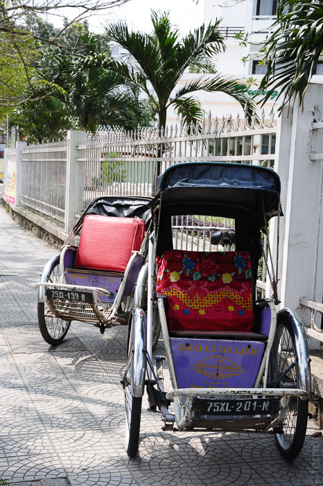
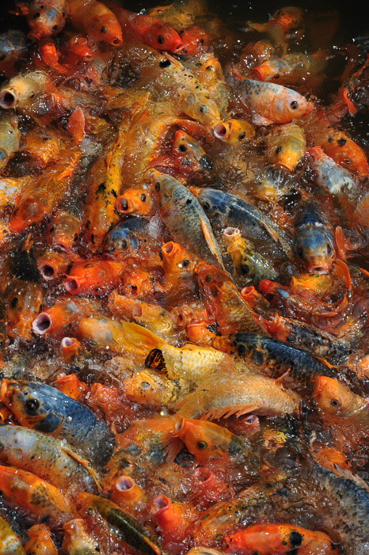
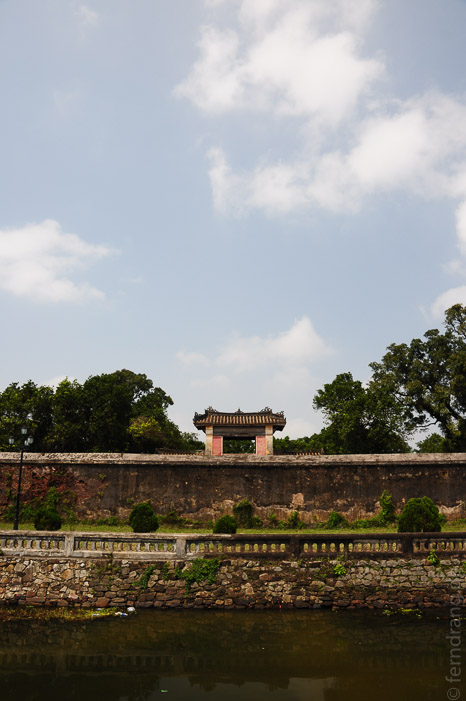
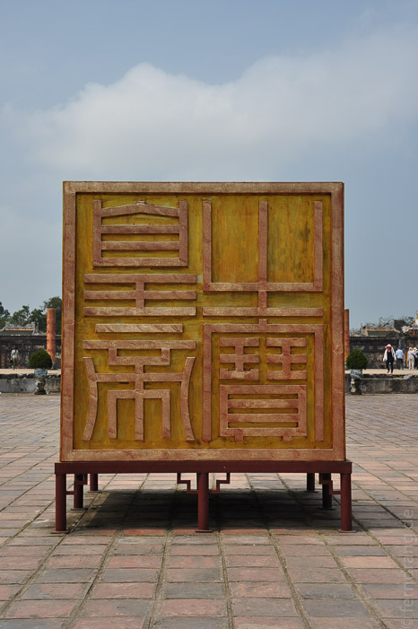
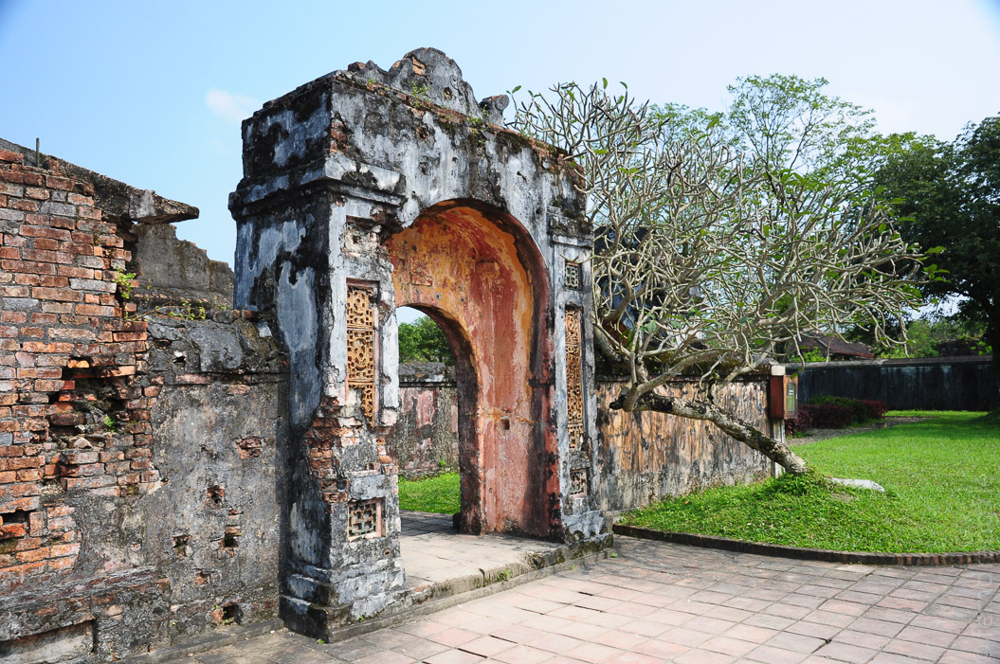
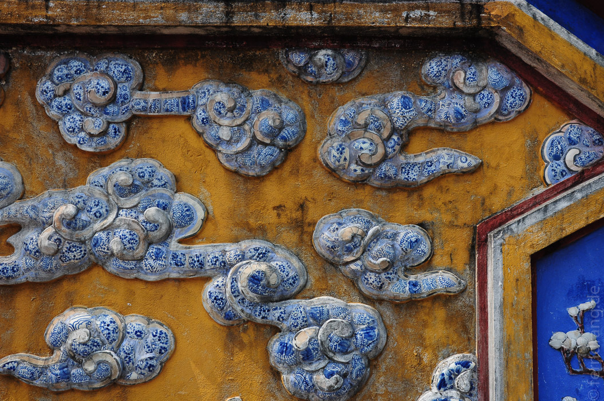
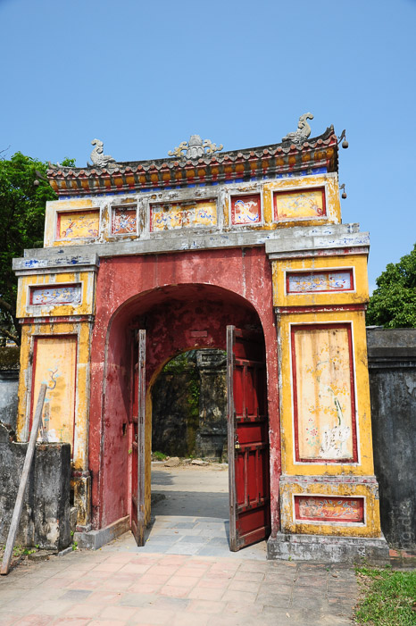
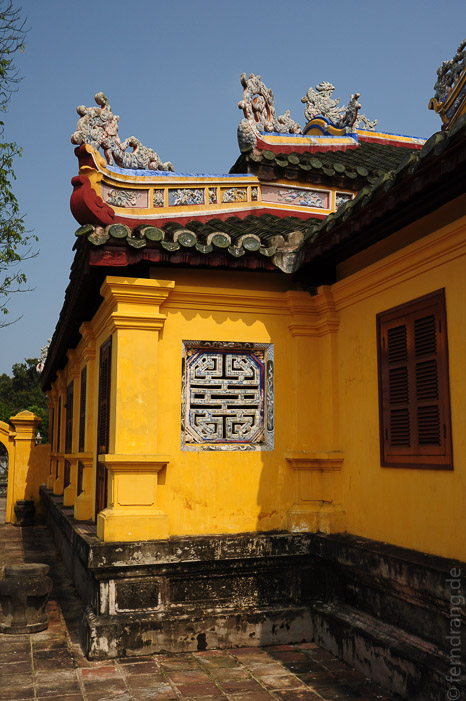

Die lange Strecke ins über 600 km südlich gelegene Hue haben wir im Nachtbus hinter uns gebracht. Nach einiger Zeit konnte man sich auf den Liegestühlen arrangieren und das Beste aus einer unerholsamen Nacht machen. In den 14 Stunden Fahrt konnten wir einige Vorurteile absegnen: Vietnam besteht nur aus Reisfeldern, jeder Vietnamese hat ein Motorrad.
Endlich in Hue angekommen, sind wir im kleinen Hotel Nino abgestiegen. Dort haben wir trotz frühem Erscheinen nicht nur direkt ein Zimmer beziehen können, sondern haben auch noch ein Frühstück im voraus bekommen. Das Zimmer war zwar sehr klein und hatte kein Fenster, war aber nett eingerichtet, blitzsauber und hatte eine Badewanne. Für 14$ die Empfehlung für Hue!
 Auf der Nordseite des Parfüm-Flusses (nicht verwandt mit der Pagode und olfaktorisch nicht nachvollziehbar) befindet sich die alte Kaiserstadt. Früher residierten hier die Kaiser, die sich eine trotzige Mauer mit extrabreitem Wassergraben gebaut haben. Ein Großteil des Stadtlebens spielt sich immer noch innerhalb der Mauern ab. Dort gibt es neben einem hässlichen Klotz mit einer überdimensionierten vietnamesischen Flagge noch die Zitadelle.  
Diese Stadt in der Stadt hat ihre eigene Mauer, weil hier Kaiser, Hofstaat und Konkubinen untergebracht waren. Von der im Krieg heiß umkämpften Festung ist dank fürsorglichem Bombardement beiderseits nicht viel übrig geblieben. Einige restaurierte Gebäude zeugen aber von beachtlicher Pracht. Die vielen symmetrischen Höfe, Tore, Pagodendächer und Zierteiche muten chinesisch an.
Nach den Morgenstunden ist auch endlich die Wolkendecke aufgebrochen, die uns seit unserer Ankunft in Hanoi begleitet hat. Unter strahlendem Blau wirkt die Stadt gleich ganz anders. Optimal für einen tagesfüllenden Rundmarsch intra muros. Südlich des Flusses hat die Stadt allerdings nichts zu bieten. Hier befinden sich die meisten Hotels und viele Restaurants, so dass es in den Straßen nur so von Touristen wimmelt. Die Lokale sind hier teilweise zwar hübsch aufgemacht, können den Straßenküchen aber geschmacklich nicht das Wasser reichen.
  